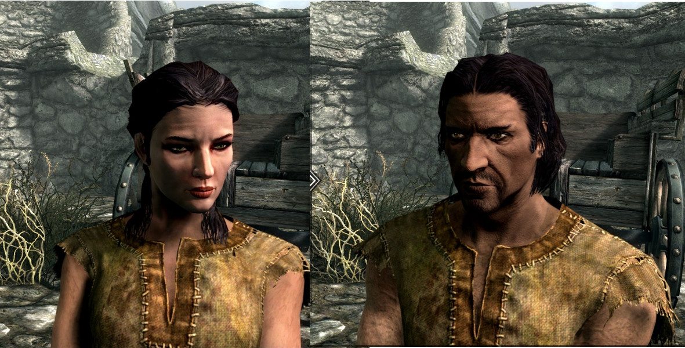
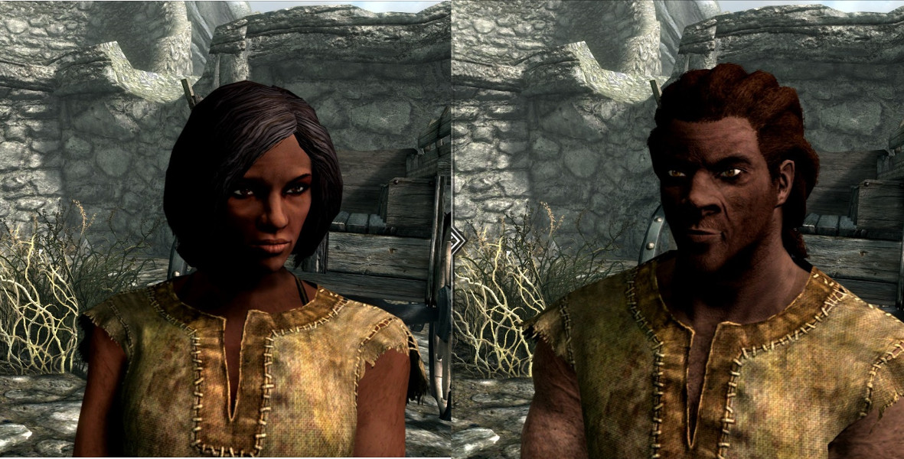

Razas
Alto elfo
Conocidos por los humanos como Altos Elfos y en su lengua como Altmer, proceden de la Isla de Estivalia y son considerados como los descendientes más puros de los antiguos Aldmer. Físicamente destacan por ser más altos que los otros elfos, con una tonalidad de piel dorada y una fisionomía delgada. Los Altmer poseen, en general, una concepción muy alta de ellos mismos como denotan los nombres que suelen emplear para su raza («El pueblo elegido» o «El pueblo culto») y algunos de ellos mantienen una actitud de superioridad respecto a otras razas (incluidos los propios elfos). Como casi todos los elfos, poseen un gran talento para la magia, gracias a sus grandes reservas de energía.
Elfo del bosque
Los elfos del bosque (Bosmer) viven en los bosques de Bosque Valen. Son buenos exploradores y ladrones, y arqueros de gran destreza. Tienen una resistencia natural al veneno y a las enfermedades y pueden ordenar a las bestias que luchen a su favor. Son carnívoros, debido al Green Pact, un pacto firmado entre los Bosmer por el cual no deben dañar a las plantas, pudiendo comer sólo productos basados en la carne y prohibiendo talar árboles pertenecientes a Bosque Valen.
Elfo oscuro
Los elfos oscuros (Dunmer) son elfos de piel oscura, nativos de la provincia de Morrowind. Tienen los ojos rojos y brillantes y sus tonos de piel varían de verde a gris, con algún tono de azul. Sus habilidades están muy equilibradas, mezclando magia y fuerza por igual, también poseen resistencia natural al fuego. Se dice que son desgraciados por causas del destino. Muchos se exiliaron a Ventalia, en Skyrim, por las continuas guerras y cataclismos naturales de su tierra como las erupciones del mayor volcán de todo Tamriel, Montaña Roja. Tienden a ser xenófobos, han sido los últimos habitantes de Tamriel en abolir la esclavitud.
Orco
Los orcos, también llamados orsimer. Los orcos son conocidos por su destreza en el cuerpo a cuerpo, su habilidad para la herrería y, sobre todo, su coraje. Los orcos son conocidos como el Pueblo paria, y algunos sufren el desprecio de los miembros de otras razas, ya que tienen que lidiar con el estigma de ser considerados brutales, sucios e incultos. Los orcos provienen de Orsinium, una ciudad-estado situada entre las provincias de Skyrim, Páramo del Martillo y Roca Alta.
Imperial
Los Imperiales, mezcla de varias tribus Humanas Nede, Nibenese o Cryrodill, Cyro-Nordicos, son naturales de la civilizada y cosmopolita provincia de Cyrodiil. Ellos fueron subyugados por una raza de Aldmer, los Ayleids, y con una rebelión en contra de ellos formados bajo la guía de San Alessia en 1E 242 tuvo tanto éxito que los Ayleids fueron llevados a la extinción (aunque dejaron muchos tesoros). Los Imperiales son muy educados y bienhablados. También son conocidos por la disciplina y el entrenamiento de los ejércitos de sus ciudadanos. Con esto fueron capaces de luchar contra la Guardia Roja por el control de la mayor parte de Tamriel. Aunque físicamente son menos imponentes que las otras razas, los imperiales han demostrado ser astutos diplomáticos y comerciantes; y estos rasgos, junto con su habilidad y entrenamiento como infantería ligera, les ha permitido dominar a todas las demás naciones y razas, erigiendo el monumento a la paz y la prosperidad que comprende el Glorioso Imperio.
Nordico
Los nórdicos (pueblo Nede) son una raza de humanos de origen de la isla de Atmora de altos y de rubios cabellos. También su altura sobresale de la media de los humanos. Conocidos por su increíble resistencia al frió y a los hechizos helados. Son guerreros entusiastas y actúan como soldados, mercenarios, mercaderes y herreros alrededor de todo Tamriel. Sobresalen en todo tipo de guerra. Ysgramor, un líder guerrero del frió continente de Atmora, huyendo de la guerra civil que allí ocurría, llegó con sus hijos y compañeros y expulsaron al los elfos que allí vivían, los Falmer, y fundaron el reino de Skyrim, siendo los primeros humanos en colonizar Tamriel. Tiber Septim, o más conocido como Talos de Atmora, fue un Sangre de Dragón que unificó los humanos para formar el primer imperio humano en Tamriel. Por encima de todo, la cultura nórdica se centra en la búsqueda del honor y la gloria, poniendo un gran énfasis en la familia. Los nórdicos viven en las zonas heladas, reminiscentes a su nativa Atmora, conocidos como un pueblo militante de sus vecinos. Los nórdicos también son por naturaleza marineros, beneficiándose del comercio marítimo desde sus primeras migraciones a través del mar de Atmora. Ellos capitanean y tripulan las flotas mercantes de muchas regiones, pudiéndose encontrar a lo largo de las costas de Tamriel.
Breton
Los bretones son medio elfos, una mezcla entre Altmer y Nede, en un intento de crear una raza superior. Habitan la provincia de Roca Alta. Se trata de una raza de magos con alta resisténcia a la magia, aunque con algunos rasgos distintivos. Son considerados una raza inteligente en Tamriel, conocida por su competencia en el pensamiento abstracto, una posible razón para su destreza en artes mágicas, además de ser buenos exploradores. En términos de apariencia física, tienen todos los rasgos de un humano y ni uno de Mer.
Guardia rojo
Los guardias rojos (pueblo Yokudans) viven en Páramo del Martillo, tras invadirla y someter a sus anteriores habitantes los Orcos, pues son originarios del continente de Yokuda (al oeste de Tamriel en el Mar de Abecea) que desapareció por causas desconocidas. No comparten la misma sangre de otras razas humanas, y no tienen ninguna relación con la patria ancestral de los países nórdicos Atmora. Se trata de los guerreros con más talento natural en Tamriel. De piel oscura y pelo hirsuto, los guardias rojos de Páramo del Martillo parecen haber nacido para la batalla; a pesar de que su orgullo y su feroz independencia de espíritu les hace más adecuados como exploradores o tiradores, o como héroes libres y aventureros, más que como soldados rasos. Además de sus afinidades culturales hacia cualquier estilo de arma y armadura, los guardias rojos también son bendecidos con constituciones robustas y rapidez al correr y una resistencia natural al veneno por su rápida adaptación a los entornos cálidos y/o secos. También son conocidos como Alik'r por vivir en el desierto más grande de todo Tamriel, el Desierto Alik'r, que ocupa casi todo el Páramo del Martillo.
Argoniano
Los argonianos (también llamados Saxhleel en su lengua nativa) son una raza de aspecto reptiliano que tienen bránqueas además de pulmones lo cual les permite respirar debajo del agua. Los argonianos son oriundos de la provincia de Ciénaga Negra. Su hábitat húmedo y boscoso les ha hecho resistentes a casi cualquier enfermedad y son conocidos por sus habilidades como exploradores y guerreros. Los argonianos tienen fama de ladrones y contrabandistas entre otras razas de Tamriel, es por ello que suelen tener un carácter callado y tranquilo y son poco dados a relacionarse con desconocidos.
Khajita
Los khajiita son una de las razas humanoides que habitan en el continente de Tamriel, principalmente su provincia natal de Elsweyr. Ellos son reconocidos por su apariencia de gato, su disimulado acento y por ser los creadores del Skooma mediante el refinado del azúcar lunar. Sienten gran debilidad por los dulces. Muchos khajiitas desprecian las armas a favor de sus garras naturales. Esto les hace ser unos excelentes ladrones, gracias a su agilidad natural, sigilo, visión nocturna y capacidad de acrobacia sin igual. A pesar de su mala fama, en muchos casos merecida, son buenos guerreros y comerciantes.